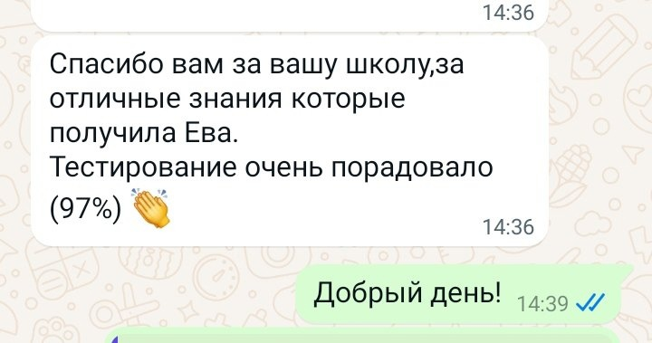
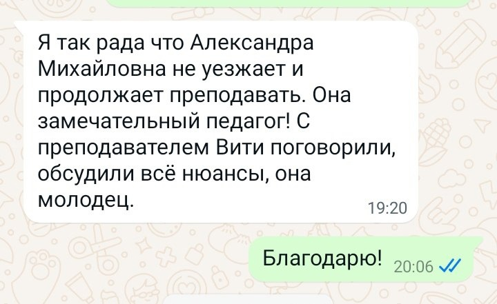
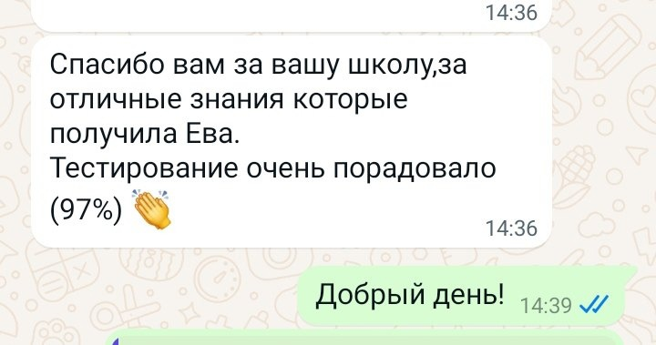
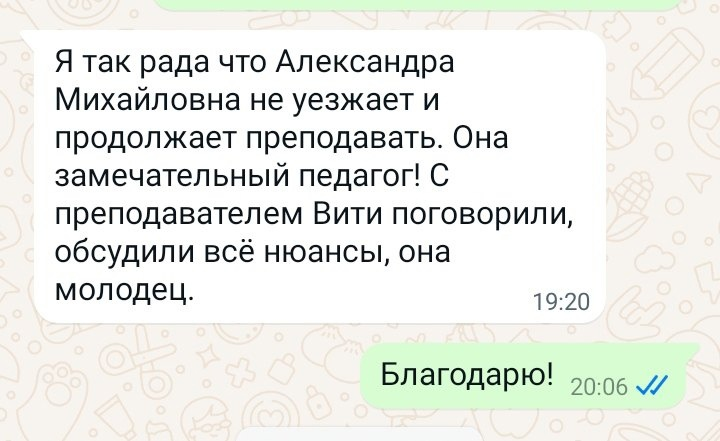

Добро пожаловать в Good English!
Приветствуем вас на сайте студии Good English!
Мы находимся в городе Свободный (СВБ) Амурской области и обучаем детей от 7 лет и взрослых английскому и китайскому языку.
Несколько фактов о нашей студии:
- Работаем с января 2021 года
- Формируем группы по уровню знаний, чтобы детям было комфортно обучаться
- Используем игровой подход в обучении, что позволяет замотивировать детей. Обычно дети с удовольствием бегут к нам на занятия😉
- Занимаемся по современным пособиям
С нами комфортно, интересно и результативно🤝
Наилучших результатов в обучении достигают дети, которые начинают обучение языкам в более раннем возрасте.
Чтобы процесс обучения вызывал интерес, наши педагоги используют игровой метод.
Преподаватели стараются обратить внимание на каждого ребенка и подобрать к нему индивидуальный подход. Занятия проводятся в небольших группах, поэтому педагог может уделить внимание каждому.
Мы строим свои занятия, придерживаясь следующих правил:
- Комфортная обстановка на занятиях;
- Формирование интереса к языку и процессу обучения;
- Игровая форма уроков;
- Настойчивость в достижении результатов.
В итоге дети с легкостью запоминают слова, фразы, грамматику. Практикуются в разговорном английском во время общения с преподавателем и сверстниками. Улучшают свое произношение.
Также в студии занимаются взрослые люди в вечернее время. Группы формируются по уровню знаний, чтобы вы могли комфортно и эффективно обучаться и достигать своих целей, связанных с изучением английского языка.
Присоединяйтесь к нашей большой и дружной семье!
Отзывы наших клиентов
 


